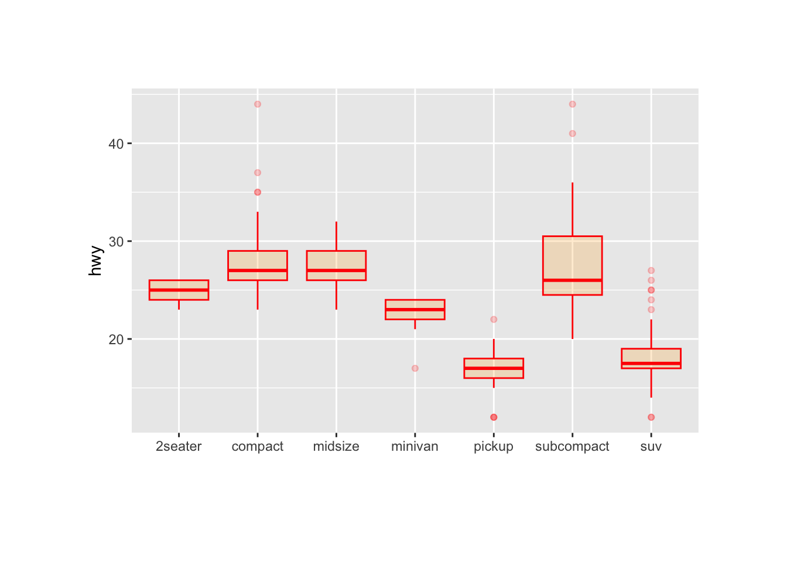
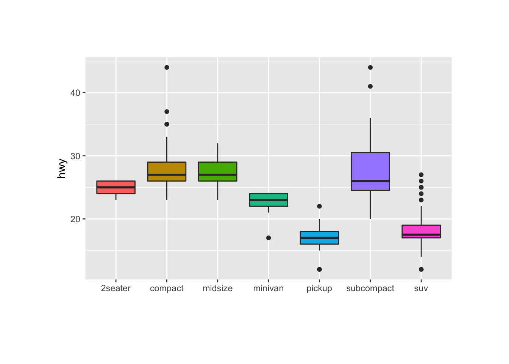
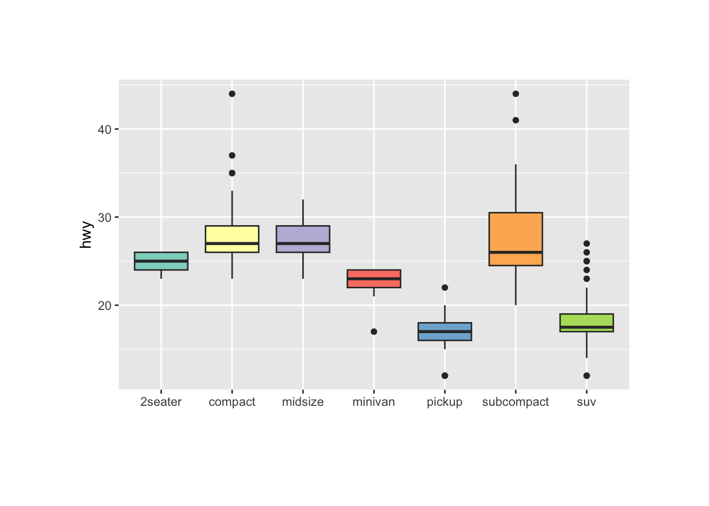
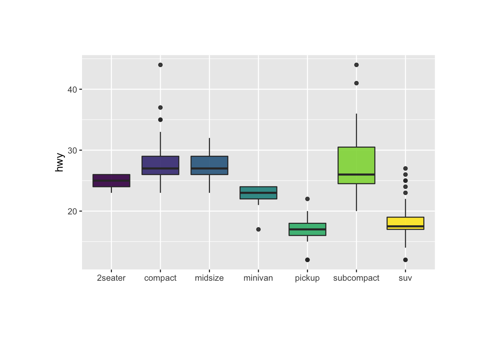

General color customization

These for examples illustrate the most common color scales used in boxplot.
Note the use of RcolorBrewer and viridis to automatically generate nice color palette.
# library
library(ggplot2)
# The mtcars dataset is natively available in R
#head(mpg)
# Top Left: Set a unique color with fill, colour, and alpha
ggplot(mpg, aes(x=class, y=hwy)) +
geom_boxplot(color="red", fill="orange", alpha=0.2)
# Top Right: Set a different color for each group
ggplot(mpg, aes(x=class, y=hwy, fill=class)) +
geom_boxplot(alpha=0.3) +
theme(legend.position="none")
# Bottom Left
ggplot(mpg, aes(x=class, y=hwy, fill=class)) +
geom_boxplot(alpha=0.3) +
theme(legend.position="none") +
scale_fill_brewer(palette="BuPu")
# Bottom Right
ggplot(mpg, aes(x=class, y=hwy, fill=class)) +
geom_boxplot(alpha=0.3) +
theme(legend.position="none") +
scale_fill_brewer(palette="Dark2")Highlighting a group
Highlighting the main message conveid by your chart is an important step in dataviz. If your story focuses on a specific group, you should highlight it in your boxplot.
To do so, first create a new column with mutate where
you store the binary information: highlight ot not. Then just provide
this column to the fill argument of ggplot2 and eventually
custom the appearance of the highlighted group with
scale_fill_manual and scale_alpha_manual.

# Libraries
library(ggplot2)
library(dplyr)
library(hrbrthemes)
# Work with the natively available mpg dataset
mpg %>%
# Add a column called 'type': do we want to highlight the group or not?
mutate( type=ifelse(class=="subcompact","Highlighted","Normal")) %>%
# Build the boxplot. In the 'fill' argument, give this column
ggplot( aes(x=class, y=hwy, fill=type, alpha=type)) +
geom_boxplot() +
scale_fill_manual(values=c("#69b3a2", "grey")) +
scale_alpha_manual(values=c(1,0.1)) +
theme_ipsum() +
theme(legend.position = "none") +
xlab("")